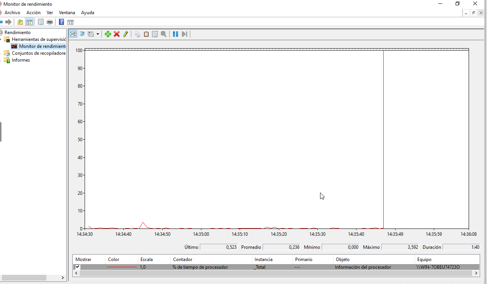
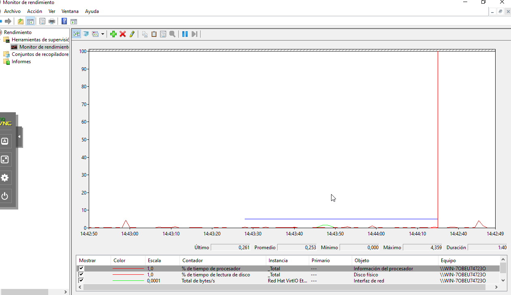
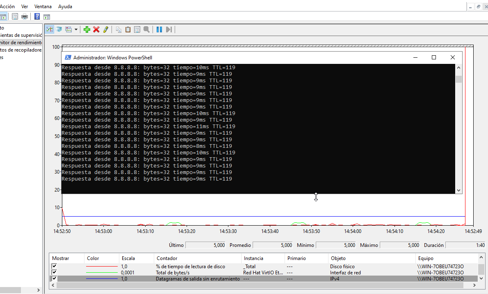
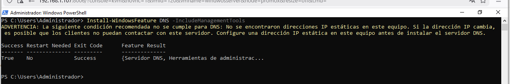
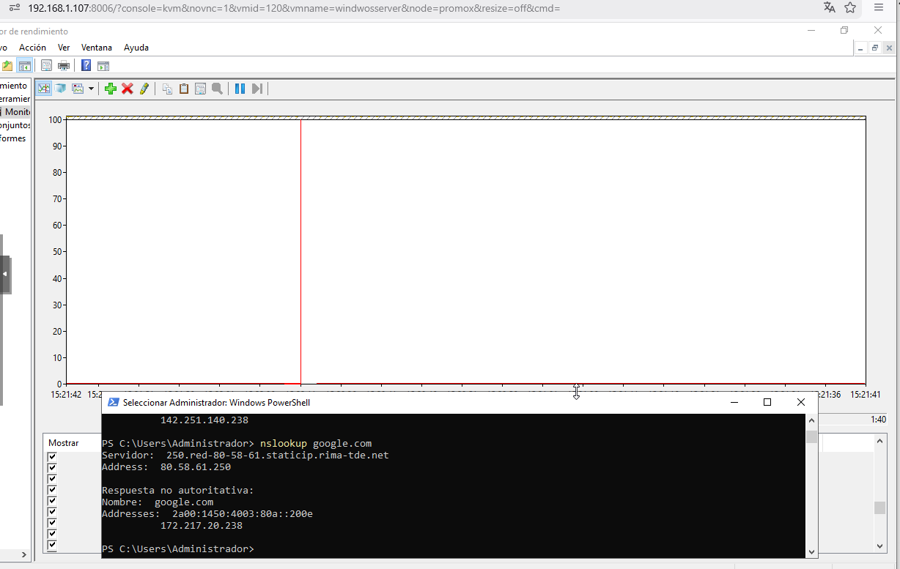
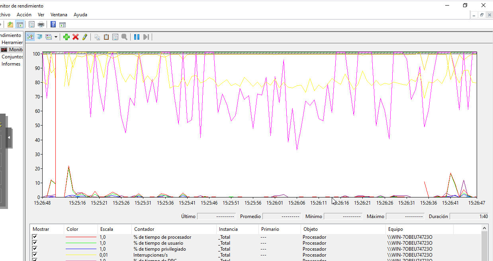
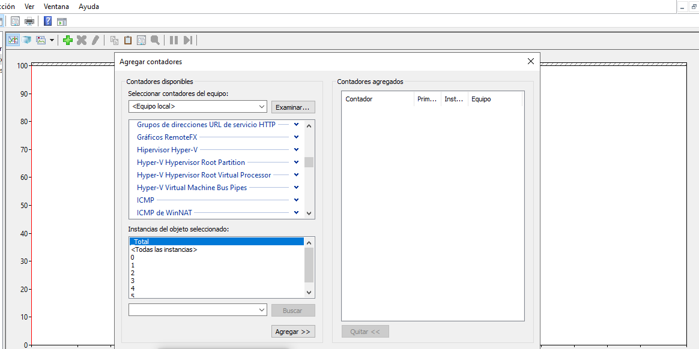

Se accede a la herramienta Monitor de rendimiento mediante el comando
perfmon. Inicialmente se muestra el contador de CPU (% Processor Time).

Se añaden los siguientes contadores obligatorios:
Estos indicadores permiten monitorizar red y almacenamiento en tiempo real.

Se genera tráfico de red mediante ping y actividad de lectura de disco. Se observa variación en la gráfica, confirmando el funcionamiento correcto del monitor.

Install-WindowsFeature DNS -IncludeManagementTools
Se instala el rol DNS para disponer de contadores específicos del servicio.

Se añaden contadores como:
Se generan consultas con nslookup para visualizar actividad real.

Se configura un escenario de virtualización añadiendo contadores clave:
Este conjunto permite detectar cuellos de botella típicos en entornos virtualizados.

Se comprueba la existencia de contadores iSCSI. Al tratarse de un servidor limpio, no aparecen contadores asociados ya que no existen volúmenes remotos configurados.
En un entorno real se monitorizarían:

Se ha configurado un sistema completo de monitorización en Windows Server utilizando Performance Monitor. Se han analizado recursos críticos como CPU, memoria, disco y red, así como servicios específicos como DNS. Este tipo de herramientas permite detectar cuellos de botella, anticipar fallos y optimizar el rendimiento del servidor.